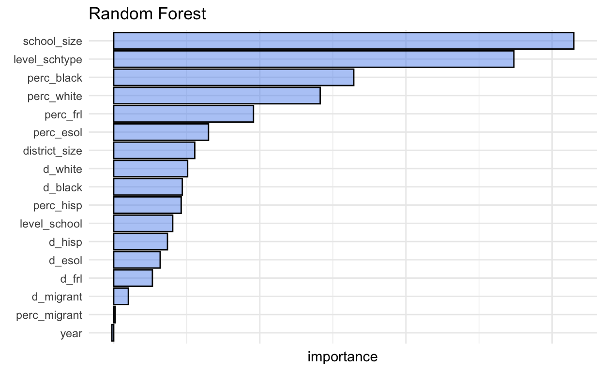
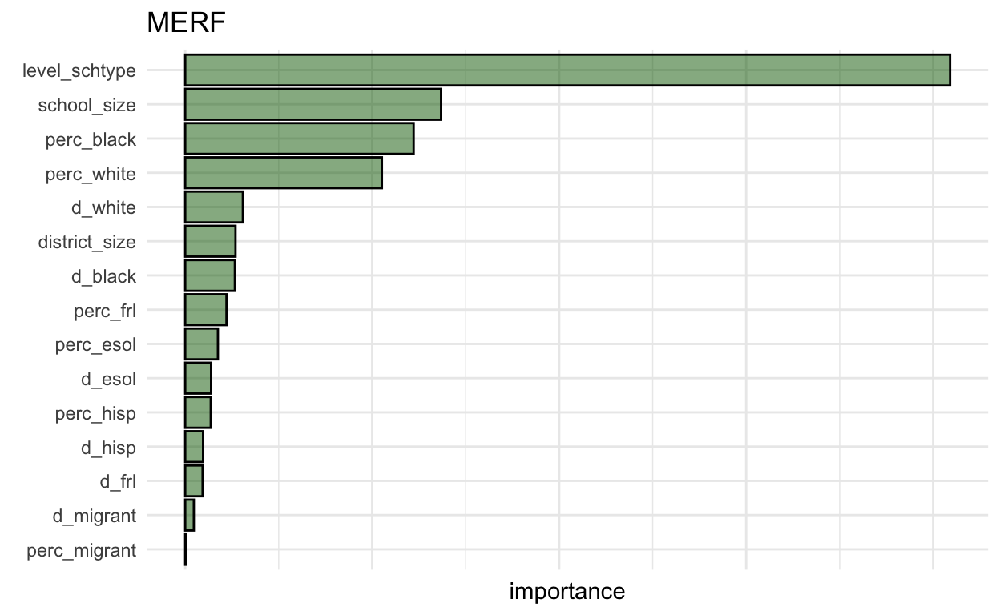

A comparison of (S)MERTs, (S)REEMtrees, (S)MERFs & Traditional Random Forests.
Im working on a project with my PhD advisor, Dr.Keith Zvoch, which provided multi-wave, nested data. We wanted to make predictions on the data, but hoped to properly model the repeated measures and nested design. After some digging, I found {LongituRF} and the corresponding research paper on the method Capitaine (2021). They introduce the stochastic random effects expectation maximation (SREEM) forest and provide a more general framework for the generalized semi-parametric stochastic mixed-effects model that unites previously proposed related models (i.e., MERTs, MERFs, REEMtrees). It is of note that Capitaines (2021) work is all done in a case where the number of predictors >> the number of observations.
Thus, Ive got two goals in this post:
{ranger}Heres their generalized semi-parametric stochastic mixed-effects model, which SREEM forests are an example of the generalized semi-parametric stochastic mixed-effects model:
\(Yij = f(X_{ij}) + Z_{ij}b_i + (t_{ij}) + _{ij}\) f = mean behavior function created by a matrix of covariates (\(X_{ij}\)) \(Z_{ij}\) = vector a covariates associated with a vector of random effects \(b_i\) = serial correlation modeled as a stochastic process. \(_{ij}\) = error.
We can modify the terms of the generalized model to get instances of more familiar models with this framework, just like with the generalized linear model and, e.g., regression or t-test:
decision tree (f estimated by single tree and all predictors, Z = = 0) random forest (f estimated by many trees with subset of predictors, Z = = 0) mixed effects regression tree (f estimated by single tree and all predictors, Z = estimated as linear mixed effects model, = 0) mixed effects random forest (f estimated by many trees with subset of predictors, Z = estimated as linear mixed effects model, = 0) stochastic random effect expectation maximization forest (f estimated by many trees with subset of predictors, Z = estimated as linear mixed effects model, = estimated as a stochastic process)
The stochastic random effect is a term used to account for longitudinal data, we can still account for random effects of nesting without estimating serial correlation via the stochastic term. However, Capitaine (2021) showed these models are relatively robust to inappropriate incorporation of such stochasticity.
The difference between the MERT/MERF and REEMtrees/REEMforests is subtle. It comes down to the tree-structure used in the estimation of leaf values; specifically the intra-individual covariance matrix is taken into account in the estimation of leaf values for REEMtrees/REEMforests mean behavior function. In MERT/MERF, simple means of leaf values are used instead. This is clearly a benefit in REEMtrees/REEMforests if we have stable strong auto-correlative effect or many waves, but in practice Ive had more luck with MERFs. This could be a feature of the data Im working with (only 3 waves, inconsistent auto-correlative effect across schools, etc.); I need to look into this more deeply.
In simple terms, this iterates between estimation of fixed effects and random effects, where fixed effects are estimated in a tree-based model. To be more elaborate:
The algorithm iterates between estimation of unknown model parameters (i.e., Z and ) and the estimation of the mean behavior function f with an adaptation of the maximum likelihood-based EM algorithm until convergence is reached. Random effects and stochastic process are estimated after computation of an estimated f.
This is done by taking conditional expectations given the data and forming best linear unbiased predictors based on matrix algebra combining the variance matrices, the effects of predictors, and the difference between the observed outcome and the estimated f.Iterating through this process accounts for the intra-individual covariance matrix in the values of terminal nodes.
Take the difference between observed value and random effects estimate (which begins at mean 0 and variance 1, so the first value is the observed value). Then we estimate f for each tree in the forest and estimate leaf values. The product of the function and the estimated values are then averaged. This is used to estimate two functions for all individuals: (1) the stochastic process and (2) the random effects.
Updating those functions results in new values for the variance matrices of the stochastic terms and random effects. If the convergence criterion is not met, the difference between the estimated value and the random effects terms are taken and f is re-estimated, followed by re-estimation of other terms, etc.
Refer to Capitaine (2021) for greater details.
I often use the Georgia department of Educations data for examples because its in my field and is publicly available. If you want the data, its on my GitHub for this project. See this flexdashboard of mine for a better understanding of the data, its sources, and some findings.
I did use {mice} for multiple imputation of this data because I wanted as much data as possible to run the model. There are theoretical implications of this that should be considered, but I am presently using this data as a methodological example.
I do a few things here, including:
dat_2015 <-
rio::import(
here::here(
'_blog/running-longitudinal-random-forests-with-longiturf/Imputed Data',
'year_2015_imputed.csv')
) %>%
#select(-exclusionary) %>%
mutate_if(is.character, as.factor)
dat_2016 <-
rio::import(
here::here(
'_blog/running-longitudinal-random-forests-with-longiturf/Imputed Data',
'year_2016_imputed.csv')
) %>%
mutate_if(is.character, as.factor)
dat_2017 <-
rio::import(
here::here(
'_blog/running-longitudinal-random-forests-with-longiturf/Imputed Data',
'year_2017_imputed.csv')
) %>%
mutate_if(is.character, as.factor)
dat_2018 <-
rio::import(
here::here(
'_blog/running-longitudinal-random-forests-with-longiturf/Imputed Data',
'year_2018_imputed.csv')
) %>%
mutate_if(is.character, as.factor)
dat_temp <-
bind_rows(
dat_2015,
dat_2016,
dat_2017,
dat_2018
) %>%
rename(
school_size = total,
school_type = fac_schtype
) %>%
tibble() %>%
mutate(school_type = na_if(school_type, ""),
year = year - 2015) %>%
# drop data if schools don't report a school type
drop_na()
## setting up the factors so they're unique across all districts etc.
reference_district <-
dat_temp %>%
select(district) %>%
unique() %>%
mutate(level_district = 1:nrow(.))
reference_school <-
dat_temp %>%
select(school_name_unique) %>%
unique() %>%
mutate(level_school = 1:nrow(.))
reference_schtype <-
dat_temp %>%
select(school_type) %>%
unique() %>%
mutate(level_schtype = 1:nrow(.))
## make sure same labels for training and testing categories
dat_temp_joined <-
dat_temp %>%
left_join(reference_schtype) %>%
left_join(reference_school) %>%
left_join(reference_district) %>%
select(-district, -school_name, -school_type, -school_name_unique) %>%
mutate(
level_schtype = factor(level_schtype),
level_school = factor(level_school),
level_district = factor(level_district)
)
train_temp <-
dat_temp_joined %>%
filter(year < 3)
test <-
dat_temp_joined %>%
filter(year == 3) %>%
select(-year) %>%
mutate_if(Negate(is.factor), scale) %>%
mutate(year = 3)
## this tells us who was here for 3 years
three_year_ids <-
train_temp %>%
count(level_school) %>%
arrange(n) %>%
filter(n == 3) %>%
pull(level_school)
dat_years <-
train_temp %>%
filter(level_school %in% three_year_ids) %>%
pull(year)
dat <-
train_temp %>%
filter(level_school %in% three_year_ids) %>%
select(-year) %>%
mutate_if(Negate(is.factor), scale) %>%
mutate(year = dat_years)
To walk you through the data a bit, anything with perc_ is a school level percent variable and anything with d_ is a district percent (made by aggregating the school percents). school_type refers to elementary, middle, high school, or K-12.
The outcome were interested in is number of exclusionary punishments. These are more or less any punishments which remove a student from the school.
The other variables should be common sense by the name; again, see this flexdashboard for more information.
dat %>% head(3)
# A tibble: 3 x 20
school_size[,1] perc_frl[,1] perc_black[,1] perc_hisp[,1]
<dbl> <dbl> <dbl> <dbl>
1 0.405 -0.134 -0.530 -0.145
2 -0.343 0.571 -0.296 0.404
3 -0.0124 0.119 -0.530 -0.0765
perc_white[,1] perc_migrant[,1] perc_esol[,1] exclusionary[,1]
<dbl> <dbl> <dbl> <dbl>
1 0.747 3.06 -0.426 -0.0436
2 0.161 5.53 0.360 -0.529
3 0.678 3.06 -0.416 -0.393
exclusionary_ps[,1] district_size[,1] d_black[,1] d_hisp[,1]
<dbl> <dbl> <dbl> <dbl>
1 -0.149 -0.803 -0.648 0.0712
2 -0.394 -0.803 -0.648 0.0712
3 -0.313 -0.803 -0.648 0.0712
d_white[,1] d_esol[,1] d_migrant[,1] d_frl[,1] level_schtype
<dbl> <dbl> <dbl> <dbl> <fct>
1 0.758 0.292 5.16 0.436 1
2 0.758 0.292 5.16 0.436 2
3 0.758 0.292 5.16 0.436 3
level_school level_district year
<fct> <fct> <dbl>
1 1 1 0
2 2 1 0
3 3 1 0The model likes getting data in a specific way. I am not a big fan of the specification; I decided to make a list that had the same structure as the list from the DataLongGenerator() within the package. The list below has the appropriate structure. I explained all of the components in comments to make it clear.
From the years = 1 - 3 (i.e., 2015-2017).
X <-
dat %>%
select(
-year,
-exclusionary,
-exclusionary_ps,
-level_district,
-level_school,
district_size
)
list_dat <-
list(
# predictors, level1 and level2
X = X,
# outcome
Y = as.numeric(pull(dat, exclusionary)),
# id variables for each unique school
id = as.numeric(pull(dat, level_school)),
# random effects (I'm using only a random intercept)
Z = as.matrix(rep(1, nrow(dat))),
# years where wave 1 = 0, wave 2 = 1, wave 3 = 2
time = as.numeric(pull(dat, year))
)
In all of these examples, Ill provide you with the amount of time this took me to run (in seconds). I also am using all default settings. Ive commented these out to show you the settings and how to specify it.
For each of the models, Ive run the OrnsteinUhlenbeck stochastic process. I chose this because it essentially pulls estimates back to their mean. This seems intuitive to me, as perhaps, the student composition changes yearly, but faculty and staff may be there acting similarly.
library(LongituRF)
start_time <- proc.time()
mert1 <-
MERT(
X = data.frame(list_dat$X),
Y = list_dat$Y,
id = list_dat$id,
Z = list_dat$Z,
time = list_dat$time,
sto = 'OrnUhl', # OrnsteinUhlenbeck
#iter = 100,
#delta = 0.001
)
[1] "stopped after 4 iterations."stop_time <- proc.time()
run_time <- stop_time - start_time
Heres the run time for that model:
run_time
user system elapsed
9.483 1.556 11.077 start_time <- proc.time()
reemtree1 <-
REEMtree(
X = data.frame(list_dat$X),
Y = list_dat$Y,
id = list_dat$id,
Z = list_dat$Z,
time = list_dat$time,
sto = 'OrnUhl',
#iter = 100,
#delta = 0.001
)
[1] "stopped after 4 iterations."stop_time <- proc.time()
run_time <- stop_time - start_time
Heres the run time for that model:
run_time
user system elapsed
11.940 1.864 13.934 start_time <- proc.time()
merf1 <-
MERF(
X = data.frame(list_dat$X),
Y = list_dat$Y,
id = list_dat$id,
Z = list_dat$Z,
time = list_dat$time,
sto = 'OrnUhl',
#iter = 100,
#delta = 0.001
#mtry = ceiling(ncol(data.frame(list_dat$X))/3),
#ntree = 500
)
[1] "stopped after 33 iterations."stop_time <- proc.time()
run_time <- stop_time - start_time
Heres the run time for that model:
run_time
user system elapsed
1121.49 43.58 1168.78 Ill say here that (S)REEMforest had a lot of trouble converging for me. From the limited trouble shooting I did on the matter, it appears that the issue with the (S)REEMforest is in its estimation of random effects and/or their predictors. Even with an intercept-only model and no stochastic term, I couldnt consistently get convergence. Admittedly, this could be an issue with the random effects just for my data; however, if that were the case, Id expect MERF to have issues as well. Ill make a post on this if I figure it out.
From the year = 3 (i.e., 2018). Notice that in this step Im filtering out cases that were observed before. With these cases, we can predict with fixed and random effects. Well need to make a function to predict the whole data set, using just the fixed effects to predict cases that we havent seen before (i.e., schools who didnt report before 2018)
X_test <-
test %>%
filter(level_school %in% merf1$id) %>%
select(
-year,
-exclusionary,
-exclusionary_ps,
-level_district,
-level_school,
district_size
)
list_test <-
list(
X = X_test,
Y = as.numeric(test %>% filter(level_school %in% merf1$id) %>% pull(exclusionary)),
id = as.numeric(test %>% filter(level_school %in% merf1$id) %>% pull(level_school)),
Z = as.matrix(rep(1, nrow(test))),
time = test %>% filter(level_school %in% merf1$id) %>% pull(year)
)
The native prediction function from LongituRF removed the predictions for cases that werent observed in the data (i.e., schools which didnt report data before 2018). For that reason, I made the fixed_prediction_function() (below) that creates a data frame of predictions for all cases. The way we predict cases that are new is simply with the fixed effects.
fixed_prediction_function <-
function(object, X, id, Z, time, new_df, id_var_name, ...)
{
`%notin%` <- Negate(`%in%`)
if("tidyverse" %notin% (.packages())){suppressMessages(library(tidyverse))}
preds_existing <-
predict(
object = object,
X = X,
id = id,
Z = Z,
time = time
)
temp <-
new_df %>%
filter({{id_var_name}} %notin% object$id) %>%
mutate(predictions = predict(object = object$forest, newdata = .))
final_df <-
new_df %>%
filter({{id_var_name}} %in% object$id) %>%
mutate(predictions = preds_existing) %>%
bind_rows(temp) %>%
select(level_school, predictions)
return(final_df)
}
I obtain predictions for each of the three LongituRF based models (the (S)MERT, (S)REEMtree, and the (S)MERF). Again, I had difficulty with convergence on the (S)REEMforest, so I omitted it.
predictions_mert_df <-
fixed_prediction_function(
object = mert1,
X = data.frame(list_test$X),
id = list_test$id,
Z = list_test$Z,
time = list_test$time,
new_df = test,
id_var_name = level_school,
)
predictions_reemtree_df <-
fixed_prediction_function(
object = reemtree1,
X = data.frame(list_test$X),
id = list_test$id,
Z = list_test$Z,
time = list_test$time,
new_df = test,
id_var_name = level_school,
)
predictions_merf_df <-
fixed_prediction_function(
object = merf1,
X = data.frame(list_test$X),
id = list_test$id,
Z = list_test$Z,
time = list_test$time,
new_df = test,
id_var_name = level_school,
)
{ranger}First Ill remove the {LongituRF} package and load {ranger}.
Now Ill fit the model and obtain predictions on test data. Because I cant specify time or id for the nested observation, Im just putting them in as factors predicting the outcome in the random forest. {ranger} is able to work with factors with large levels easily and I dont want to keep information away from the random forest when making a comparison. I want to use the same number of trees in mtry across functions, so Im switching the {ranger} default to the same number used in the MERF (ceiling(ncol(data.frame(list_dat$X))/3) = 5). The ranger default would have used mtry = 4 with the formula we used.
rf1 <-
ranger(
formula =
exclusionary ~
d_black +
d_hisp +
d_white +
d_migrant +
d_frl +
d_esol +
perc_black +
perc_frl +
perc_hisp +
perc_white +
perc_migrant +
perc_esol +
school_size +
district_size +
level_schtype +
year +
level_school,
mtry = ceiling(ncol(data.frame(list_dat$X))/3),
importance = 'permutation',
data = dat
)
predictions_rf <- predict(rf1, data = test)$predictions
detach("package:ranger", unload=TRUE)
Heres the scaled actual exclusionary punishments (y-axis) compared to the predctions for each model (x-axis).
test_trees <-
test %>%
mutate(
predictions_rf = predictions_rf,
diff_rf = predictions_rf - exclusionary
) %>%
inner_join(predictions_merf_df) %>%
rename(predictions_merf = predictions) %>%
mutate(diff_merf = predictions_merf - exclusionary) %>%
inner_join(predictions_mert_df) %>%
rename(predictions_mert = predictions) %>%
mutate(diff_mert = predictions_mert - exclusionary) %>%
inner_join(predictions_reemtree_df) %>%
rename(predictions_reemtree = predictions) %>%
mutate(diff_reemtree = predictions_reemtree - exclusionary)
test_trees %>%
pivot_longer(
cols = predictions_rf:diff_reemtree,
names_sep = '_',
names_to = c('statistic', 'model'),
values_to = 'prediction'
) %>%
filter(statistic == 'predictions') %>%
ggplot(aes(x = prediction, y = exclusionary, color = model)) +
geom_point(alpha = 0.4) +
lims(x = c(-1,9), y = c(-1, 9)) +
geom_abline(intercept = 0, slope = 1) +
facet_wrap(~model)
The models all have fairly similar MAE (ours are in standard deviation units), with MERFs being the best and traditional random forests being the worst.
test_trees %>%
pivot_longer(
cols = predictions_rf:diff_reemtree,
names_sep = '_',
names_to = c('statistic', 'model'),
values_to = 'prediction'
) %>%
filter(statistic == 'diff') %>%
group_by(model) %>%
summarize(mae = mean(abs(prediction))) %>%
ggplot(aes(fill = model, y = fct_reorder(model, mae), x = mae)) +
geom_col(alpha = 0.4, show.legend = F, color = 'black') +
labs(
x = 'Mean Absolute Error') +
theme_minimal(base_size = 18) +
colorblindr::scale_fill_OkabeIto() +
theme(plot.title.position = 'plot') +
labs(y = 'model')
This improvement is with a process that has a relatively small variance in the random intercept. I could imagine this being more important as there is more variance in the random effects or if the models had different .
# A tibble: 3 x 2
Rand_Int_Variance model
<dbl> <chr>
1 0.206 MERT
2 0.218 REEMtree
3 0.205 MERF Ive printed the variable importance plots for each method. I have removed the x-axis to prevent people from trying to draw conclusions across models axes. We can see that the models are pulling out theoretically relevant variables and similar variables across the models.
Interestingly, the MERF gave much greater weight to the variables that are theoretically relevant, compared to those with lesser theoretical impact.
tibble(
variables = names(rf1$variable.importance),
importance = rf1$variable.importance
) %>%
ggplot() +
geom_col(
aes(y = fct_reorder(variables, importance),
x = importance),
fill = 'cornflowerblue',
alpha = 0.5,
color = 'black',
show.legend = FALSE
) +
labs(
title = 'Random Forest',
y = element_blank()
) +
theme_minimal() +
theme(axis.text.x = element_blank())

tibble(
variables = names(mert1$forest$variable.importance),
importance = mert1$forest$variable.importance
) %>%
ggplot() +
geom_col(
aes(y = fct_reorder(variables, importance),
x = importance),
fill = 'coral3',
alpha = 0.5,
color = 'black',
show.legend = FALSE
) +
labs(
title = 'MERT',
y = element_blank()
) +
theme_minimal() +
theme(axis.text.x = element_blank())
tibble(
variables = names(reemtree1$forest$variable.importance),
importance = reemtree1$forest$variable.importance
) %>%
ggplot() +
geom_col(
aes(y = fct_reorder(variables, importance),
x = importance),
fill = 'orange',
alpha = 0.5,
color = 'black',
show.legend = FALSE
) +
labs(
title = 'REEMtree',
y = element_blank()
) +
theme_minimal() +
theme(axis.text.x = element_blank())
tibble(
variables = names(merf1$forest$importance[,1]),
importance = merf1$forest$importance[,1]
) %>%
ggplot() +
geom_col(
aes(y = fct_reorder(variables, importance),
x = importance),
fill = 'darkgreen',
alpha = 0.5,
color = 'black',
show.legend = FALSE
) +
labs(
title = 'MERF',
y = element_blank()
) +
theme_minimal() +
theme(axis.text.x = element_blank())
